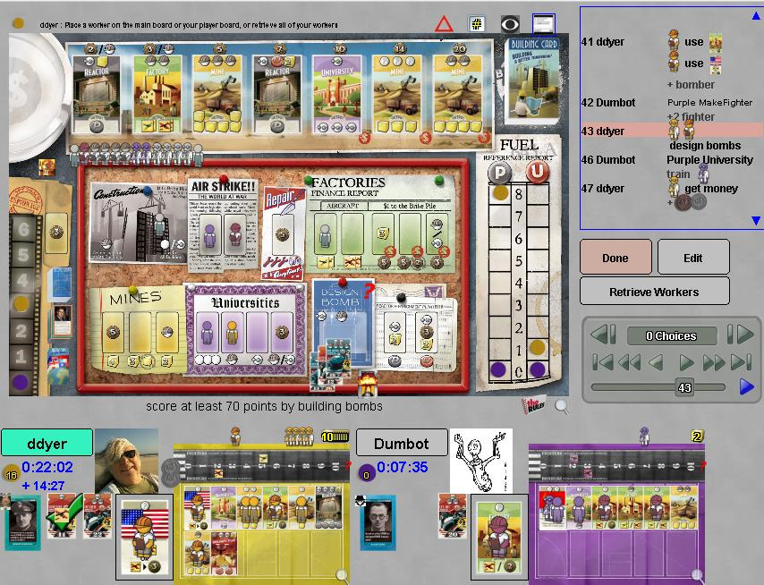

The Manhattan Project
The Manhattan Prohect is a medium-high complexity worker placement
game,
loosely based on building atomic bombs. Don't worry: they're
built and stockpiled, not dropped on cities. In the game, you mine
yellowcake, enrich it to bomb grade uranium or use reactors to create
Plutonium. The resulting fissionable material is built into
bombs which can be tested or loaded onto planes.
The
"nations" expansion adds national capabilities which somewhat mirror
their namesake's capabilities, and the "personalities" expansion adds
mentors with powers related to their historically accurate activities.
Read the rules and notes on the implementation.
Robots: Not terrible (without tuning) so maybe eventually quite good.
|

|